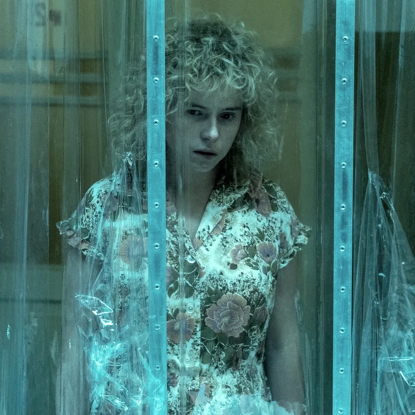

Hildur Guðnadóttir
est une femme âgée de 40 ans, née le 4 septembre 1982, d’origine Islandaise, Actuellement, la compositrice vit à Berlin avec son fils, elle est mariée avec Sam Slater qui est aussi un compositeur, producteur de musique, avec qui elle collabore pour bien de projet diffèrent. Comme « chernobyl » ou bien encore « Joker ».
